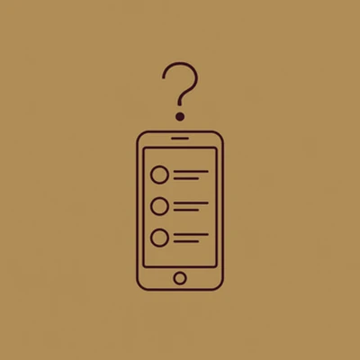
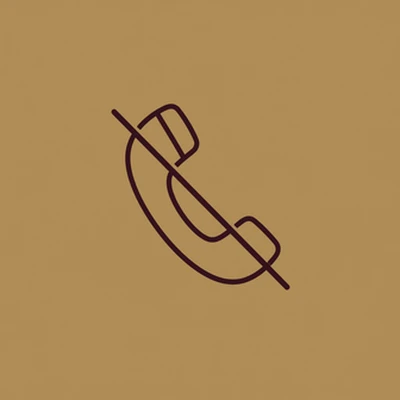
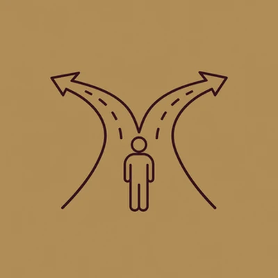
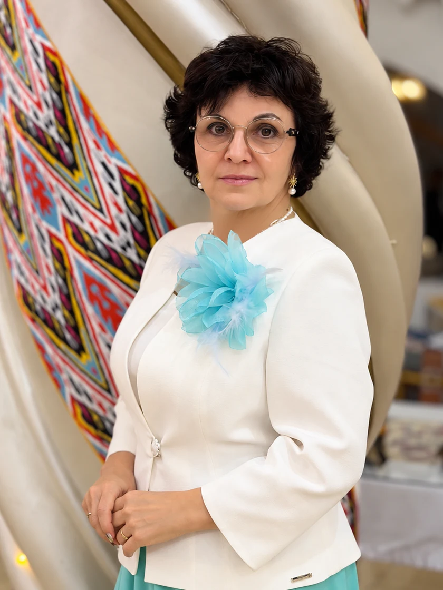

В APLGO с 2015 года
Первые 30 дней на связи ежедневно
Сопровождение — это часть партнёрства
Виктория Цицерковская
Премьер-директор, независимый партнёр APLGO

через соцсети

не хочу

после регистрации
в первый месяц
уйду, и всё рассыплется
а система так и не заработала
который вы передадите своим партнёрам
с первого дня
как ещё одно направление работы с клиентами
бизнес на расстоянии
передаём рутинные задачи
нажмите кнопку «Написать в Телеграм»
личный ID-номер и бэк-офис
ставим цели, пишем планы, выбираем статус входа
цели на каждый день, контроль выполнения
на вопросы отвечаю лично
берём лучшие инструменты
личный бренд через соцсети, чтобы новые люди написали вам сами
к знакомству с вашими близкими подключаюсь лично
встречи дважды в неделю
Создаём систему, которую вы передадите своим партнёрам

Виктория Цицерковская · Премьер-директор, независимый партнёр APLGO
Родилась и выросла во Владивостоке. В APLGO — с 2015 года, и все эти годы провожу презентации для любой аудитории. Тогда же зарегистрировала своего первого партнёра за границей — в Молдове, через Skype, без единой личной встречи.
В 2017 году приехала в Ташкент на три недели, чтобы посмотреть, как компания выходит на рынок Узбекистана, и осталась — жить и строить бизнес.
Ко мне приходят те, кто устал строить бизнес руками за каждого партнёра. В компании APL существует пошаговая система построения бизнеса. Я не изобретаю своё: беру то, что уже работает у сильных лидеров компании, дополняю инструментами и методами нового времени и передаю своей команде.
В ответном сообщении — ссылка для бесплатной регистрации на платформе компании. Далее — встреча в Zoom
Написать в ТелеграмСлово «Старт» уже в сообщении — достаточно отправить